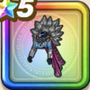

獅子王の服上
攻略班 9.0点 / イオ属性耐性+5%ドルマ属性耐性+5%イオ属性耐性+5%ドルマ属性耐性+5%【まもマス】ドルマ属性ダメージ+5%【レンジャー】ドルマ属性ダメージ+5%ドルマ属性ダメージ+5%
くわしい特徴
【レベル別習得スキル】 Lv1イオ属性耐性+5% Lv5さいだいMP+5 Lv8きようさ+10 Lv10【まもマス】ドルマ属性ダメージ+5% Lv12【レンジャー】ドルマ属性ダメージ+5% Lv12ドルマ属性ダメージ+5% Lv15ドルマ属性耐性+5% Lv18守備力+5 Lv20イオ属性耐性+5% Lv23戦闘終了時にMPを2回復する Lv25ドルマ属性耐性+5% 【限界突破スキル】 1凸攻撃力+7 2凸すばやさ+10 3凸守備力+5 4凸さいだいHP+10